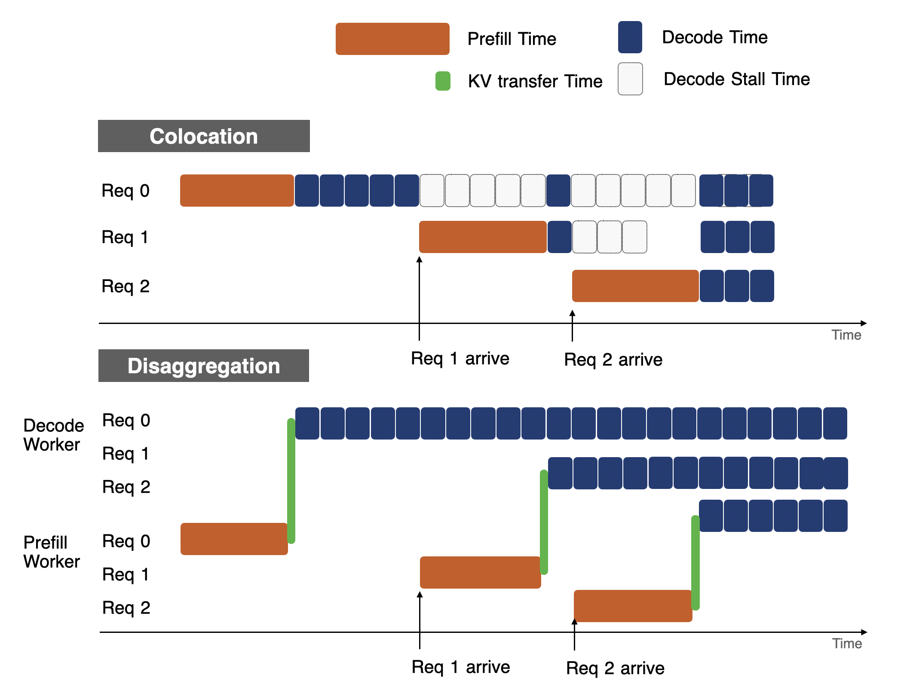
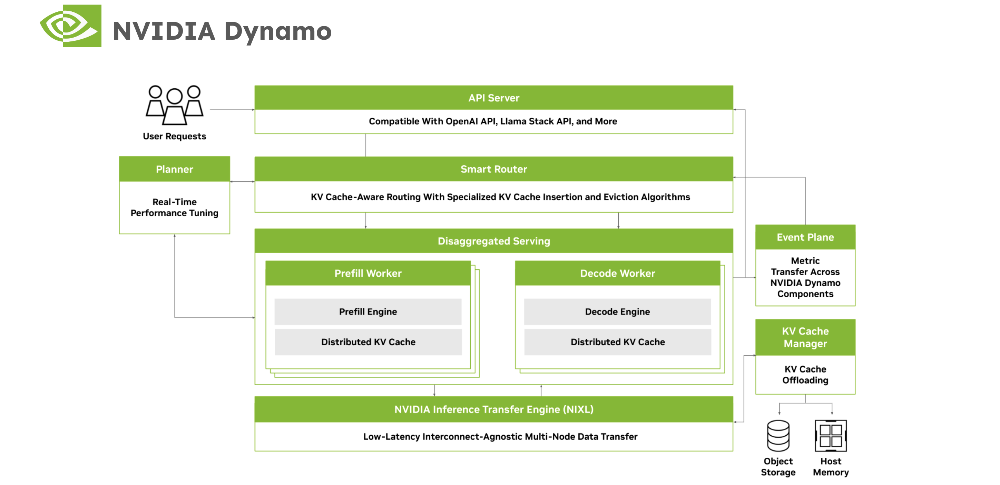
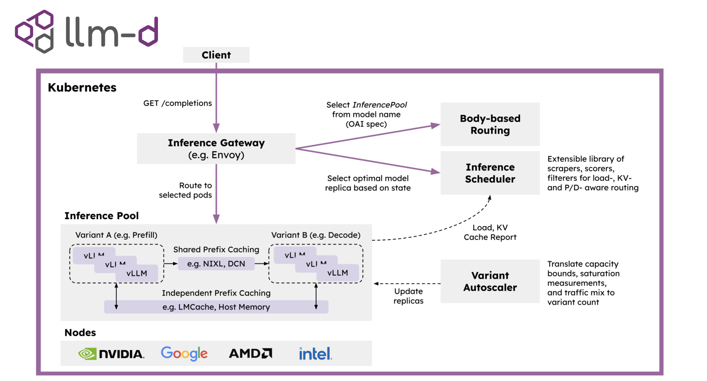
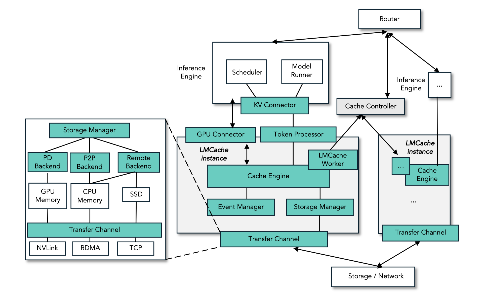
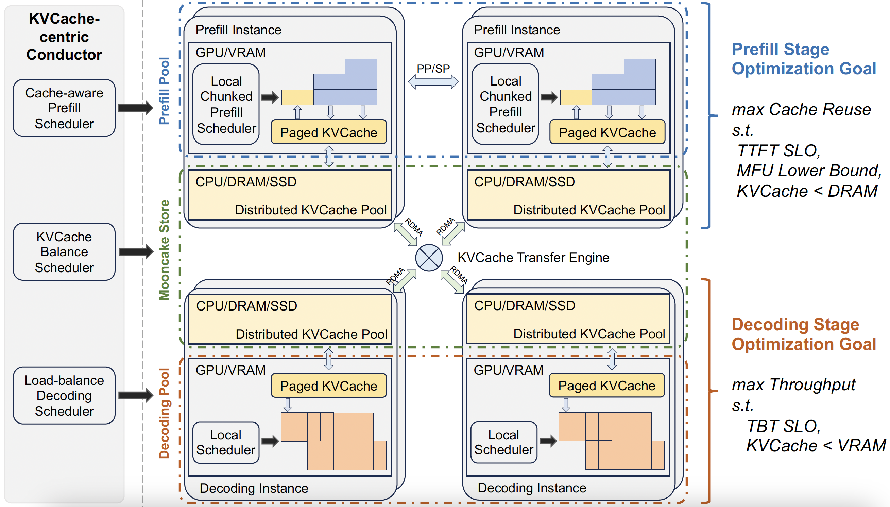
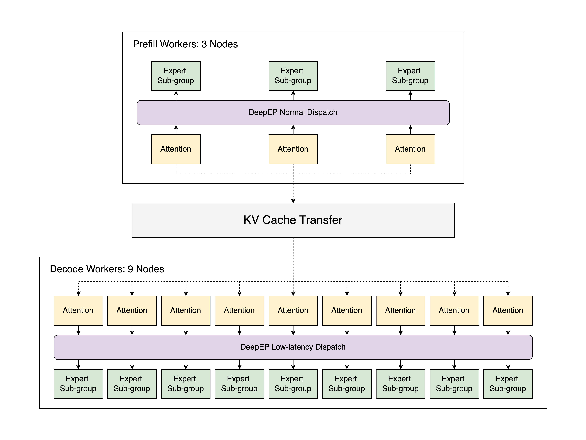
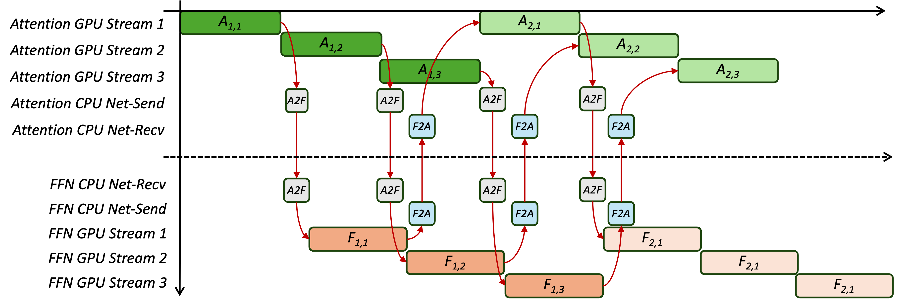

Eighteen months ago, our lab introduced DistServe with a simple bet: split LLM inference into prefill and decode, and scale them independently on separate compute pools. Today, almost every production-grade LLM serving framework – NVIDIA Dynamo, llm-d, Ray Serve LLM SGLang, vLLM, LMCache, MoonCake – runs on disaggregation and demonstrates its power in large-scale, real-world LLM serving workloads, with many more continuing to push its boundaries. Concepts like TTFT (time-to-first-token) and TPOT (time-per-output-token), now standard latency metrics in nearly every serving benchmark, were also popularized through the lens of disaggregation.
If Moore’s law says compute doubles every ~18 months, then November 2025 is a tidy checkpoint – not because NVIDIA chips doubled, but because serving systems did. LLM inference costs today have dropped at a rate far exceeding the 2x improvement compared to Moore’s law, and have delivered both lower latency under heavy and dynamic workload shifts and scalable performance across thousands of GPUs across datacenters.
Behind the scenes, much of this architectural shift can be traced back to a simple but powerful idea we explored in DistServe. This blog post is our field report as the original designers of disaggregated serving: how prefill-decode disaggregation evolved from research to production, what actually shipped (and what didn’t), and where the design space is heading as LLM workloads continue to scale. We’ll revisit the origin story, trace how disaggregation became the default playbook for large-scale LLM serving infrastructure, and sketch the next frontiers of disaggregation.

From Colocation to Prefill-Decode Disaggregation
Pre-Disaggregation Era: Colocation and its Limitations
Before DistServe, most serving frameworks colocated prefill and decode in the same GPUs. At each iteration, the scheduler batches as many requests as possible, runs one iteration, and generates one token for all of these requests. Continuous batching, the technique first proposed by Orca and later popularized by vLLM, by default colocates prefill and decode together to improve throughput of the LLM serving, which at that time showed significantly better performance than previous approaches.
However, colocation has two fundamental limitations.
(1) Interference. When prefill and decode share the same GPUs, they inevitably interfere with each other’s latency. Upon a new prefill request, the system must either (a) pause ongoing decodes to prioritize prefill, or (b) batch prefill and decode together, both of which severely elongate decode latency. Even with mitigations like chunked prefill, a single large prefill can inflate TPOT by 2~30x, especially under bursty workloads.

(2) Coupled Scaling In production, applications emphasizes TTFT (time-to-first-token) and TPOT (time-per-output-token) as key user-facing latency SLOs. When prefill and decode are served on the same set of GPUs, the resource allocator must provision for the worst case of both metrics simultaneously - leading to resource over-provisioning and poor resource efficiency.
As deployment scales and latency targets tighten, these two issues – interference and coupled resource allocation – become increasingly costly. These were precisely the pain points that motivated DistServe, which decoupled prefill and decode into distinct compute pools, breaking the prefill-decode interference and enabling independent scaling for the first time.
How DistServe Was Initially Built to Eliminate Interference and Decouple Scaling
The design of DistServe is very simple. First, instead of forcing prefill and decode to share the same GPU, DistServe disaggregates them into different sets of GPUs, which fundamentally eliminates interference between prefill and decode. Second, DistServe searches for the best configuration (e.g., number of GPUs and parallelism strategy) to maximize throughput, allowing prefill and decode to satisfy TTFT and TPOT independently while maintaining high overall efficiency.
In addition to the two core techniques, DistServe also supports simple and efficient KV-cache transfer across different prefill/decode parallelism strategies, locates prefill and decode within the same node to minimize KV-cache transfer overhead (by utilizing high-speed intra-node NCCL bandwidth), and implements a pull-based scheduling algorithm to prevent decode workers from being flooded by spiky prefill workloads.
Retro: Why did DistServe take off in 2025?
When we introduced DistServe, we believed it was a disruptive idea – perhaps even ahead of its time – so much so that we received a lot of push backs from the open-source community, and didn’t see widespread adoption throughout 2024, primarily because disaggregation indeed introduces an architectural shift which requires a lot of engineering effort to refactor existing serving systems. But in 2025, the landscape suddenly changed – disaggregation quickly became the default playbook across nearly every major LLM serving stack.
One major reason is that more and more businesses started aggressively adopting LLMs as a core component of their applications. When businesses run competitively at full scale, system throughput is not the only most important metric any more. Taming latency has become increasingly critical to the growth (or even survival) of their businesses. DistServe precisely addresses this pain point by making prefill and decode latency easy to monitor and easy to control in real-world production systems. At the same time, models grew larger and traffic rates increased, forcing inference systems to scale to hundreds or even thousands of GPUs to accommodate large models and highly variable workloads. At this scale, a disaggregated architecture truly shines because it can independently allocate resources to different phases while pairing effectively with different parallelism strategies.
More importantly, disaggregation also means a more composable system architecture. It unlocks new opportunities for optimizations across every component of the inference stack and serving lifecycle. Many academic and industry efforts have focused on specialized optimizations for both phases – tuning for different hardware, improving KV-cache storage, reducing network communication overhead, transferring KV caches with lower latency and higher efficiency, and many more. This has opened an entirely new field of research and engineering opportunities in LLM serving – spanning systems, applications, architecture, and even hardware design. We next review several notable works that bring disaggregated serving to the next level.
Disaggregated Inference Today
What began as a radical architectural idea has now become the standard playbook for large-scale LLM serving. Virtually all production-grade frameworks related with LLM serving – spanning orchestration layers, inference engines, storage systems, and even emerging hardware architectures - now embrace some form of prefill-decode (P/D) disaggregation, making it one of the defining principles of the modern inference stack.
Orchestration Layer
NVIDIA Dynamo. The announcement of NVIDIA Dynamo at NVIDIA GTC 2025 marks one of the major milestones of Distserve being widely recognized and deployed by the LLM inference community. Dynamo is one of the most advanced and mature open-source data center scale distributed inference frameworks for p/d disaggregation, and supports popular inference engines like TensorRT-LLM, vLLM and SGLang. Dynamo introduces prefill and decode workers as first-class citizens, and connects these workers using a KV-aware router to efficiently route requests between p/d instances. It treats prefill and decode workers as first-class services, linked by a KV-aware Router for efficient scheduling and routing. A centralized GPU Planner continuously profiles GPUs to auto-scale resources and balance workloads. NVIDIA Dynamo also includes NVIDIA NIXL, a low latency point-to-point inference transfer library that unifies NVLink, InfiniBand, PCIe, and SSD fabrics under a single abstraction layer. Dynamo achieved state-of-the-art results on the NVIDIA GB200 NVL72 rack scale architecture at the SemiAnalysis InferenceMax and MLPerf Inference benchmarks. More recently, NVIDIA announced Rubin CPX, a new accelerated compute hardware architecture that fully embraces p/d disaggregation to serve long-context inference workload. This is the testimony that shows disaggregation has influenced both software and hardware architectures for LLM inference.

llm-d. Built with Kubernetes-native primitives like Gateway API Inference Extension and LeaderWorkerSet, llm-d integrates disaggregated serving into the Kubernetes operational model. It separates prefill and decode variants as independently scalable services with strict SLO control, enabling elastic deployment across heterogeneous GPU clusters. llm-d focuses on policy-driven routing and autoscaling and failure isolation within containerized, multi-tenant environments - a step toward bringing disaggregation to general cloud inference platforms. Together, llm-d brings amazing performance on llama4 moe models and models with wide EP.

Ray Serve LLM. Building on Ray Serve primitives, Ray Serve LLM provides a first-class serving pattern for prefill-decode disaggregation, focusing on modularity and ease of deployment on Ray clusters (including KubeRay-managed Kubernetes). A key differentiator is its seamless integration with the broader Ray ecosystem, including data processing and reinforcement learning (RL). It decouples prefill and decode instances as separate Serve deployments and orchestrates requests between them. The framework integrates with NIXL and LMCache connectors for efficient KV transfer and leverages Ray’s distributed computing primitives to enable independent autoscaling of each phase based on load characteristics. Together with data parallel attention and KV-affinity request routing, this solution provides a flexible and programmable layer for inference workloads that can be easily extended and composed to implement different serving patterns, including prefill-decode disaggregation.
Storage Layer
LMCache, developed by the University of Chicago team, focuses on accelerating the storage layer performance for KV cache centric LLM inference applications. LMCache optimizes p/d disaggregation by accelerating the KV cache movement from prefill to decode instance, including batched data movement operations and I/O pipelining. By decoupling KV cache storage from the inference engine, LMCache enables flexible cache management across heterogeneous devices and instances, allowing the cache to persist, migrate, or be shared independently of model execution, significantly improving scalability and resource utilization (see the tech report).

MoonCake, developed by the Kimi AI team as both an academic project (FAST’25 best paper) and now another industry standard open-source project, features a KVCache-centric p/d disaggregated platform for LLM serving. Mooncake pools the underexploited storage mediums as a centralized KV cache abstraction such that any prefill can hand off to any decode anywhere in the cluster.

Today, both LMCache and Mooncake have become one of the standard storage backends for large-scale LLM inference.
Core Engine Layer
Nearly all open-source LLM inference engines, including SGLang and vLLM, have built first-class support for disaggregated inference. For example, SGLang tested DeepSeek‑R1 with PD disaggregation on 96 H100 GPUs using 3 nodes (24 GPUs) for prefill and 9 nodes (72 GPUs) for decode, and achieved a speed of 52.3k input tokens per second (TPS) and 22.3k output TPS per node – perhaps the first open-source implementation that matches the number in the Deepseek blog. They also published a follow-up in September 2025 on GB200 NVL72, and showed up to 3.8x prefill and 4.8x decode throughput gains compared to the H100 setup. vLLM, with llm-d 0.3, reports the performance with wide EP that it can reach 2.2k tokens/s (32-way EP) or ~2.0k tokens/s (96-way EP) per H200 GPU as of October 2025. TensorRT-LLM, with native support of NVIDIA Dynamo, also published a few impressive performance number on Deepseek-R1 on NVL72 with their WideEP optimization, and over 60kTPS or 1000 TPS on GPT-OSS 120B as reported by Semianalysis InferenceMax as in NVIDIA TRT-LLM blog post in Oct 2025.

Deepseek is a very early adopter of p/d disaggregation as their core inference stack well before open source serving systems caught up. In Deepseek-v3, the team uses 3 prefill nodes and 9 decode nodes (each with 8 H100 GPUs) to allow the system fully saturate compute during prefill while keeping decode latency tightly bounded. Each phase uses different dispatch logic for expert parallel: the prefill phase runs with smaller expert-parallel (EP) and data-parallel (DP) degrees to process large prompts efficiently, whereas the decode phase employs a much wider EP (≈ 256) and high DP (≈ 8-16) configurations to maximize GroupGEMM utilization and throughput (see their implementation in DeepEP). For KV cache transfer, they built the 3FS library to combine the throughput of thousands of SSDs and the network bandwidth of hundreds of storage nodes to enable applications to access storage resource in a locality-oblivious manner. Amazingly, the Deepseek team open sourced these awesome frameworks to the open source community, which effectively lowered the barrier for practitioners to build high-performance disaggregated inference systems at scale, with a much lower entry cost to hardware and network.
In addition, many leading companies including Fireworks AI, Perplexity, Meta, Amazon, Modular, DeepInfra, Weka also have their own LLM serving framework supporting p/d disaggregation. The widespread adoption of prefill-decode disaggregation and its remarkable performance gains in production over the past year stand as the strongest testament to the power of disaggregation in the LLM serving era.
What’s the Future of Disaggregated Inference?
Academic Works and the Generalization of Disaggregation
Perhaps the closest concurrent academic work with DistServe is Splitwise and TetriInfer. Splitwise also focuses on the architectural perspective that separates P/D, and uses heterogeneous hardware (H100 vs A100) to achieve better energy efficiency. TetriInfer also studies p/p and d/d interference, and proposes to group requests of different lengths into buckets to further isolate the interference.
Beyond DistServe, many academic work also extend and improve disaggregation in many different aspects: optimize KV cache transfer (CacheGen, MemServe), search for optimal parallelism configurations (Mitra et al), optimize scheduling (SLO-Serve), fusing disaggregation & aggregation (TaiChi), multimodal serving (ModServe), supporting heterogeneous hardwares for energy efficiency (Helix, HexGen-2, CENT), optimize network (FuseLink), adapting disaggregation for RL (StreamRL), study its power efficiency (EcoServe, GreenLLM), and many many more. Together, these works demonstrate the rapid expansion and profoundness of disaggregation as a general systems principle that continues to evolve across diverse contexts in LLM inference and beyond. We are deeply encouraged to see the community’s growing interest in this direction and feel grateful that our early exploration helped spark broader efforts toward disaggregated design.
Disaggregated Inference with Heterogenous Hardware
Another interesting property of disaggregation is that by decoupling phases with distinct characteristics, it creates an opportunity to assign specialized hardware to each phase, further lowering the cost of serving. This flexibility allows cloud providers to use different GPU types for prefill and decode workloads, and even incentivizes hardware vendors to co-design inference stages – tailoring prefill and decode (or attention and FFN) paths independently for higher throughput and lower energy consumption.
Recent research such as Cronus, HexGen, and HexGen 2 explores how heterogeneous GPUs can reduce serving costs, while architecture-level efforts like Stratum go even further by redesigning hardware around heterogeneous memory and compute hierarchies for large-model serving; though they remain as a prototype rather than a large-scale deployment.
More excitingly, several companies - including Huawei (Ascend NPU), Enflame, MetaX, and Biren - are already prototyping or deploying decode-specialized or attention-optimized ASICs that embrace this design philosophy.
We are thrilled to see disaggregation, originally conceived as a systems technique, now shaping how the architecture and hardware community designs the next generation of accelerators—aiming for lower energy consumption, higher throughput, and smarter specialization across the inference stack.
Attention-FFN Disaggregation: The Next Frontier
Beyond prefill-decode disaggregation, a quieter but equally intriguing frontier is attention-FFN disaggregation (A/F disaggregation or AFD for short). If you now believe in P/D disaggregation, then AFD is the natural next step to unlock even more speedup at scale. The rationale is simple: for a production-size model at decoding stage, attention is generally considered as memory-bound and requires more memory to store KV-caches, whereas FFN is easily compute-bound and can take up a large but constant memory to store the model weight. Separating A/F into tailored hardware devices can ideally make both stages reach high MFU with tight SLO attainment, and (due to its ability to reduce memory consumption) also be able to host big models in a much smaller scale.
For a long time, AFD was considered impractical because each layer would require transferring activations twice, creating seemingly prohibitive network overhead. However, the rise of large MoE models such as DeepSeek-R1 and Qwen3-235B has changed the equation. These models are typically served with expert parallelism - as described in the DeepSeek V3 paper - which already introduces two all-to-all communications per decoding step. Recent works like MegaScale-Infer and Stepfun (Step-3 model technical report) noticed that this structure provides a natural opportunity for AFD: by aligning the attention-FFN split with the existing all-to-all patterns and fusing their communication, the additional data transfer from AFD becomes almost free. This insight makes AFD not just theoretically elegant but practically viable in large-scale MoE inference.
Still, current AFD implementations only demonstrate its effectiveness on MoE models. Dense models remain an open challenge: communication overhead is higher, and overlapping communication with computation becomes harder. Yet, these challenges make AFD a super exciting research frontier.

Conclusion and looking forward
18 months after its appearance, Distserve has evolved from a small disruptive prototype into the foundational core technique that powers almost every modern LLM inference engine. DistServe fundamentally eliminates prefill-decode interference and decouples resource allocation, which allows service providers to avoid over- or under-provisioning resources to tame the latency SLOs when scaling LLM inference beyond hundreds of thousands of GPUs.
The journey of disaggregated inference is far from complete. In the next blog, we will discuss our latest research results in disaggregation, stay tuned!
Citation
@article{zhong2024distserve,
title={DistServe: Disaggregating Prefill and Decoding for Goodput-optimized Large Language Model Serving},
author={Zhong, Yinmin and Liu, Shengyu and Chen, Junda and Hu, Jianbo and Zhu, Yibo and Liu, Xuanzhe and Jin, Xin and Zhang, Hao},
journal={arXiv preprint arXiv:2401.09670},
year={2024}
}